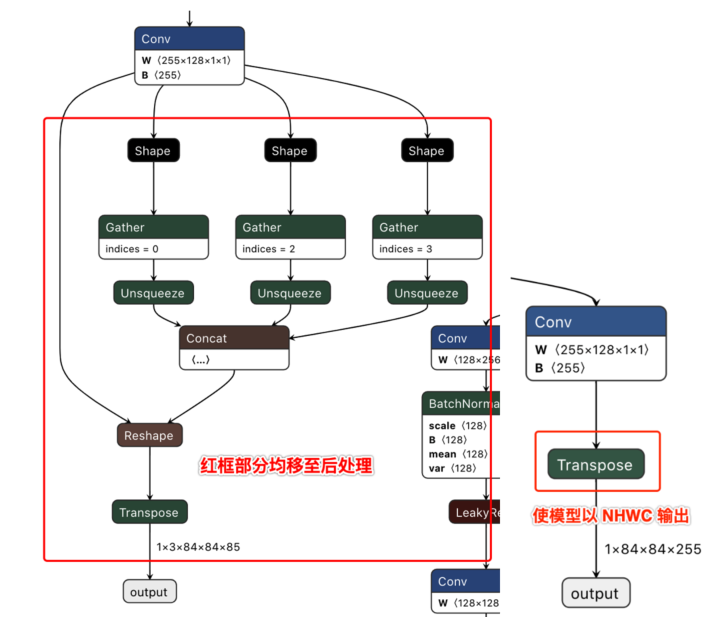

2. 算法模型示例
2.1. where to find
算法模型示例位于 horizon_model_convert_sample 路径的： 03_classification/、04_detection/ 和 07_segmentation/ 文件夹中。
2.2. 如何准备数据集
数据集地址为：vrftp.horizon.ai/Open_Explorer/eval_dataset。包含如下数据集：
/Open_Explorer/eval_dataset
├── VOC.tar.gz
├── imagenet.tar.gz
├── coco.tar.gz
├── cityscapes.tar.gz
└── cifar-10.tar.gz
请保证当前环境下有外网访问能力以及可以使用 wget。
根据需求使用以下命令下载对应数据集：
wget ftp://vrftp.horizon.ai/Open_Explorer/eval_dataset/[数据集名称]
2.3. 如何准备模型
在使用模型转换示例包时，请从地平线提供的模型发布物 model_zoo/mapper/ 路径下获取我们为您准备好的浮点模型。 对于各原始模型的来源、修改点（如有）的准备过程，请您参考以下内容。
注解
以下各模型的帧率（在开发板单线程运行ai_benchmark_j3示例包/script路径下各模型子文件夹的 latency.sh 脚本，不含后处理）计算方法： \(FPS = 1000 / 推理耗时\)。
测试开发板：x3sdbx3-samsung2G-3200。
测试核心数：单核。
2.3.1. MobileNetv1/v2
md5sum码:
md5sum
File
3fd6889ec48bda46451d67274144e2a8
mobilenet.caffemodel
8922f90f629d428fecf866e798ac7c08
mobilenet_deploy.prototxt
54aab8425ea068d472e8e4015f22360c
mobilenet_v2.caffemodel
13101ee86ab6d217d5fd6ed46f7a4faa
mobilenet_v2_deploy.prototxt
模型帧率（不含后处理）：
MobileNetv1：311.1388/s。
MobileNetv2：410.1723/s。
模型精度：
MobileNetv1：0.7033(INT8)。
MobileNetv2：0.7115(INT8)。
2.3.2. GoogleNet
md5sum
File
f107ae6806ea1016afbc718210b7a617
googlenet.onnx
模型帧率（不含后处理）：121.2709/s。
模型精度：0.6996(INT8)。
2.3.3. ResNet18
md5sum
File
0904d601fc930d4f0c62a2a95b3c3b93
resnet18.caffemodel
模型帧率（不含后处理）：113.6880/s。
模型精度：0.6836(INT8)。
2.3.4. EfficientNet_Lite0/1/2/3/4
注意
为了快速运行示例，避免使用第三方工具带来的风险，强烈推荐您直接使用地平线模型发布物 model_zoo/mapper/ 路径下准备好的ONNX浮点模型。 如果您有兴趣复现tflite2onnx的模型转换过程，也可以尝试使用以下三方工具。但地平线无法保证第三方工具的质量和转换成功率。
从模型来源：https://github.com/tensorflow/tpu/tree/master/models/official/efficientnet/lite 获取tar包。
地平线模型发布物中转换后的ONNX模型md5sum码:
md5sum
File
001a329bd367fbec22b415c7a33d7bdb
efficientnet_lite0_fp32.onnx
1205e95aea66650c71292bde236d55a9
efficientnet_lite1_fp32.onnx
474741c15494b79a89fe51d89e0c43c7
efficientnet_lite2_fp32.onnx
550455b41848d333f8359279c89a6bae
efficientnet_lite3_fp32.onnx
bde7fe57eadb4a30ef76f68da622dcd5
efficientnet_lite4_fp32.onnx
下载后可从tar包中得到.tflite文件，然后可通过tflite2onnx工具 (https://pypi.org/project/tflite2onnx/) 将tflite转换为ONNX模型。 不同版本的tflite2onnx转换出来的layout会不一样，若转换出来的ONNX模型的输入layout是NCHW排布， 则build时
input_type_train，EfficientNet_Lite0应该选择NCHW， EfficientNet_Lite1应该选择NCHW， EfficientNet_Lite2应该选择NCHW， EfficientNet_Lite3应该选择NCHW， EfficientNet_Lite4应该选择NCHW。模型帧率（不含后处理）：
EfficientNet_Lite0：437.8284/s。
EfficientNet_Lite1：311.7207/s。
EfficientNet_Lite2：176.4602/s。
EfficientNet_Lite3：116.3467/s。
EfficientNet_Lite4：65.7507/s。
模型精度：
EfficientNet_Lite0：0.7469(INT8)。
EfficientNet_Lite1：0.7625(INT8)。
EfficientNet_Lite2：0.7716(INT8)。
EfficientNet_Lite3：0.7905(INT8)。
EfficientNet_Lite4：0.8058(INT8)。
2.3.5. YOLOv2
注意
为了快速运行示例，避免使用第三方工具带来的风险，强烈推荐您直接使用地平线模型发布物 model_zoo/mapper/ 路径下准备好的Caffe浮点模型。 如果您有兴趣复现darknet2caffe的模型转换过程，也可以尝试使用以下三方工具。但地平线无法保证三方工具的质量和转换成功率。
YOLOv2模型需要首先从YOLO官网(https://pjreddie.com/darknet/yolo/)下载YOLOv2 608x608的.cfg和.weight文件 并使用darknet2caffe (https://github.com/xingyanan/darknet2caffe) 转换工具将其转换为caffe model。 (该转换工具是一个简化版本，使用时，需要修改该工具生成的.prototxt文件， 将其中的
'Reshape'层修改成'Passthrough'层，Passthrough 层具体修改后的参数请见提供的yolov2.prototxt例子， 并在输出节点增加一个NCHW2NHWC的Permute操作。)md5sum码
md5sum
File
7aa7a6764401cebf58e73e72fcbd2a45
yolov2.caffemodel
72e9a51c1e284e4b66e69f72ca9214c8
yolov2_transposed.prototxt
模型帧率（不含后处理）：6.4910/s。
模型精度：
[IoU=0.50:0.95]:0.271(INT8)。
2.3.6. YOLOv3
YOLOv3模型获取：
URL: https://github.com/ChenYingpeng/caffe-yolov3/ caffemodel 可以在该github的README.md提供的百度云下载路径中下载， 并在输出节点增加一个NCHW2NHWC的Permute操作。
md5sum码:
md5sum
File
935af6e1530af5c0017b3674adce95e9
yolov3_transposed.prototxt
9a0f09c850656913ec27a6da06d9f9cc
yolov3.caffemodel
模型帧率（不含后处理）：5.9890/s。
模型精度：
[IoU=0.50:0.95]：0.336(INT8)。
2.3.7. YOLOv5
YOLOv5模型：
可以从URL: https://github.com/ultralytics/yolov5/releases/tag/v2.0 中下载相应的pt文件。
重要
在clone代码时，请确认您使用的Tags是 v2.0，否则将导致转换失败。
md5sum码:
md5sum
File
2e296b5e31bf1e1b6b8ea4bf36153ea5
yolov5l.pt
16150e35f707a2f07e7528b89c032308
yolov5m.pt
42c681cf466c549ff5ecfe86bcc491a0
yolov5s.pt
069a6baa2a741dec8a2d44a9083b6d6e
yolov5x.pt
为了更好地适配后处理代码，我们在ONNX模型导出前对Github代码做了如下修改 （代码参见：https://github.com/ultralytics/yolov5/blob/v2.0/models/yolo.py）：
def forward(self, x): # x = x.copy() # for profiling z = [] # inference output self.training |= self.export for i in range(self.nl): x[i] = self.m[i](x[i]) # conv bs, _, ny, nx = x[i].shape # x(bs,255,20,20) to x(bs,3,20,20,85) # x[i] = x[i].view(bs, self.na, self.no, ny, nx).permute(0, 1, 3, 4, 2).contiguous() x[i] = x[i].permute(0, 2, 3, 1).contiguous()注解
去除了每个输出分支尾部从4维到5维的reshape（即不将channel从255拆分成3x85）， 然后将layout从NHWC转换成NCHW再输出。
以下左图为修改前的模型某一输出节点的可视化图，右图则为修改后的对应输出节点可视化图。
下载完成后通过脚本 https://github.com/ultralytics/yolov5/blob/v2.0/models/export.py 进行pt文件到ONNX文件的转换。
注意
在使用export.py脚本时，请注意：
由于地平线AI工具链支持的ONNX opset版本为 10 和 11， 请将
torch.onnx.export的opset_version参数根据您要使用的版本进行修改。将
torch.onnx.export部分的默认输入名称参数由'images'改为'data'，与模型转换示例包的YOLOv5示例脚本保持一致。将
parser.add_argument部分中默认的数据输入尺寸640x640改为模型转换示例包YOLOv5示例中的672x672。
模型帧率（不含后处理）：14.8898/s。
模型精度：
[IoU=0.50:0.95]：0.342(INT8)。
2.3.8. MobileNet_SSD
MobilenetSSD模型:
可以从URL: https://github.com/chuanqi305/MobileNet-SSD 获得Caffe模型。
md5sum码:
md5sum
File
bbcb3b6a0afe1ec89e1288096b5b8c66
mobilenet_iter_73000.caffemodel
模型帧率（不含后处理）：141.1831/s。
模型精度(mAP)：0.7188(INT8)。
2.3.9. EfficientNet_Det
md5sum
File
ec4129c4b300cd04f1e8f71e0fe54ca5
efficientdet_nhwc.onnx
模型帧率（不含后处理）：60.5804/s。
模型精度：
[IoU=0.50:0.95]：0.313(INT8)。
2.3.10. CenterNet
md5sum
File
fa1e884882a54fa3520d1e51477b4c1a
centernet_resnet50.onnx
模型帧率（不含后处理）：8.4940/s。
模型精度：
[IoU=0.50:0.95]：0.313(INT8)。
2.3.11. UNet
md5sum
File
21c6c645ebca92befbebc8c39d385c1e
tf_unet_trained.onnx
模型帧率（不含后处理）：24.1057/s。
模型精度：
accuracy: 0.9366(INT8)。
mIoU: 0.638184(INT8)。
2.3.12. FCOS
模型来源：可以从地平线模型开源repo获取，repo 地址暂时待定。
md5sum码：
md5sum
File
1321e3f5cbb7c4a521e41820174a82d5
fcos.onnx
模型帧率（不含后处理）：73.8498/s。
模型精度：
[IoU=0.50:0.95]：0.345(INT8)。
2.4. 算法模型示例的使用示例
本小节以YOLOv2模型为例，使用算法模型示例包中 04_detection/01_yolov2/mapper/ 路径下脚本 分步骤演示浮点模型到定点模型转换过程中的模型检查、校准数据集准备、runtime模型构建及模型精度测试几个关键步骤。
2.4.1. 进入Docker容器
首先，根据《Horizon AI Toolchain User Guide》文档中的 使用Docker环境 一节内容完成Docker环境的安装和配置并进入docker容器。
2.4.2. 验证模型是否能够执行
如下所示，运行脚本：
# 1. 进入示例脚本放置的文件夹 cd ddk/samples/ai_toolchain/horizon_model_convert_sample/04_detection/01_yolov2/mapper # 2. 执行模型检查 sh 01_check.sh
模型检查输出：
上述脚本使用
hb_mapper checker工具验证模型是否被地平线芯片支持。同时也会输出一个OP列表，表示每个OP会CPU还是BPU上执行。 如下所示：=================================================== Node ON Subgraph Type --------------------------------------------------- layer1_conv BPU id(0) HzSQuantizedConv layer1_act BPU id(0) HzLeakyRelu layer2_maxpool BPU id(0) HzQuantizedMaxPool layer3_conv BPU id(0) HzSQuantizedConv layer3_act BPU id(0) HzLeakyRelu layer4_maxpool BPU id(0) HzQuantizedMaxPool layer5_conv BPU id(0) HzSQuantizedConv layer5_act BPU id(0) HzLeakyRelu layer6_conv BPU id(0) HzSQuantizedConv layer6_act BPU id(0) HzLeakyRelu layer7_conv BPU id(0) HzSQuantizedConv layer7_act BPU id(0) HzLeakyRelu layer8_maxpool BPU id(0) HzQuantizedMaxPool layer9_conv BPU id(0) HzSQuantizedConv layer9_act BPU id(0) HzLeakyRelu layer10_conv BPU id(0) HzSQuantizedConv layer10_act BPU id(0) HzLeakyRelu layer11_conv BPU id(0) HzSQuantizedConv layer11_act BPU id(0) HzLeakyRelu layer12_maxpool BPU id(0) HzQuantizedMaxPool layer13_conv BPU id(0) HzSQuantizedConv layer13_act BPU id(0) HzLeakyRelu layer14_conv BPU id(0) HzSQuantizedConv layer14_act BPU id(0) HzLeakyRelu layer15_conv BPU id(0) HzSQuantizedConv layer15_act BPU id(0) HzLeakyRelu layer16_conv BPU id(0) HzSQuantizedConv layer16_act BPU id(0) HzLeakyRelu layer17_conv BPU id(0) HzSQuantizedConv layer17_act BPU id(0) HzLeakyRelu layer18_maxpool BPU id(0) HzQuantizedMaxPool layer19_conv BPU id(0) HzSQuantizedConv layer19_act BPU id(0) HzLeakyRelu layer20_conv BPU id(0) HzSQuantizedConv layer20_act BPU id(0) HzLeakyRelu layer21_conv BPU id(0) HzSQuantizedConv layer21_act BPU id(0) HzLeakyRelu layer22_conv BPU id(0) HzSQuantizedConv layer22_act BPU id(0) HzLeakyRelu layer23_conv BPU id(0) HzSQuantizedConv layer23_act BPU id(0) HzLeakyRelu layer24_conv BPU id(0) HzSQuantizedConv layer24_act BPU id(0) HzLeakyRelu layer25_conv BPU id(0) HzSQuantizedConv layer25_act BPU id(0) HzLeakyRelu layer27_conv BPU id(0) HzSQuantizedConv layer27_act BPU id(0) HzLeakyRelu layer28_reorg BPU id(0) HzSpaceToDepth layer29_concat BPU id(0) Concat layer30_conv BPU id(0) HzSQuantizedConv layer30_act BPU id(0) HzLeakyRelu layer31_conv BPU id(0) HzSQuantizedConv ----------------------End--------------------------重要
目前模型转换工具支持的最大输出数目为32。若原始模型的输出数目大于32个则会报错。
2.4.3. 准备校准用的数据集
在同一路径下继续执行
02_preprocess.sh脚本，如下所示：
# 将 01_common/data/coco/calibration_data中的图片 # 转换到: ./calibration_data_rgb_f32 sh 02_preprocess.sh注解
我们从COCO数据集抽取了50张图作为校准数据集，在校准前，我们对数据进行了预处理： pad-resize/转为rgb。
hb_mapper工具会从转换得到二进制数据中读取数据，预处理过的二进制数据文件格式为：c-order的矩阵存储。 每个矩阵值的数据类型为int8。
2.4.4. build异构模型
在同一路径下继续执行
03_build.sh脚本，如下所示：
sh 03_build.sh注解
上述脚本使用
hb_mapper工具转换模型，最需要关注的是转换的配置文件， 请参考文档包 Horizon AI Toolchain User Guide 文档中《使用 hb_mapper makertbin 工具转换模型》内容。上述脚本的输出如下所示：
>> ls model_output | cat full_yolov2_subgraph_0.html full_yolov2_subgraph_0.json yolov2_608x608_nv12.bin yolov2_608x608_nv12_optimized_float_model.onnx yolov2_608x608_nv12_original_float_model.onnx yolov2_608x608_nv12_quantized_model.onnx注解
您暂时只需要关心 yolov2_608x608_nv12.bin 文件，其他文件会在工具的介绍中进行说明。
2.4.5. 精度测试
继续执行
05_evaluate.sh脚本进行精度评测，如下所示：
export PARALLEL_PROCESS_NUM=${parallel_process_num} sh 05_evaluate.sh注解
因为精度评测时，需要对图片进行 前处理，对模型数据进行 后处理，所以我们提供了一个示例Python脚本。 具体请参考
sh 05_evaluate.sh。为了加快评测速度，可以适当调整并发进程数，但需要注意内存的占用情况。
2.5. 常见问题
2.5.1. 如何对齐开源框架训练得到的ONNX原始浮点模型与使用 hb_mapper makertbin 工具得到的***_original_float_model.onnx的结果？
注解
原始浮点模型与转换得到ONNX浮点模型的差异由工具链产品保障，这种验证不是必须的标准流程。
1.明确两者的概念
首先明确两个模型的概念。
前者是指开发者使用开源框架（如：TensorFlow、PyTorch、MXNet等）训练出浮点模型后，转成ONNX格式的原始浮点模型。
而后者是指使用AI芯片工具链浮点定点模型转换方案的 hb_mapper makertbin 工具，
或运行地平线模型转换示例包（即：horizon_model_convert_sample发布物）中03_classification/${modelname}/mapper/03_build.sh将前者
转换成***_original_float_model.onnx中间格式模型，其中的***代表的是具体模型名称（如：MobileNetv1或UNet等）。
2.明确两者的差异
***_original_float_model.onnx模型计算精度与转换输入的原始浮点模型是一模一样的， 有个重要的变化就是为了适配地平线平台添加了一些数据预处理计算。 一般情况下，您不需要使用这个模型，在转换结果出现异常时，如果能把这个模型提供给地平线的技术支持，将有助于帮助您快速解决问题。
3.编写脚本对齐两者结果
注解
下面以地平线模型转换示例包（即：horizon_model_convert_sample发布物）中的mobilenet_onnx模型为例进行说明。
开发者需要自行编写脚本对齐两者的结果。
在编写脚本时，需要注意以下几点。
注意
开发者自编写脚本中的图片数据处理逻辑应当与工具链示例包各模型的mapper/preprocess.py图片数据预处理脚本中的逻辑一致， 以避免由图片数据预处理方法不一致造成的结果差异。 如遇模型示例包版本不同造成的代码逻辑差异，请参见您获取到的示例包版本的图片数据预处理脚本，或咨询地平线技术团队。 各预处理transformer方法参见以下代码块：
import sys
sys.path.append("../../../01_common/python/data/")
from transformer import *
from dataloader import *
# 图片校正transformer
def calibration_transformers():
"""
step：
1、PIL resize to 256
2、crop size 224*224 from PIL center
3、NHWC to NCHW
"""
transformers = [
PILResizeTransformer(size=256),
PILCenterCropTransformer(size=224),
HWC2CHWTransformer(),
]
return transformers
# 图片推理transformer
def infer_transformers():
"""
step：
1、PIL resize to 256
2、crop size 224*224 from PIL center
3、bgr to nv12
4、nv12 to yuv444
"""
transformers = [
PILResizeTransformer(size=256),
PILCenterCropTransformer(size=224),
BGR2NV12Transformer(data_format="HWC"),
NV12ToYUV444Transformer((224, 224)),
]
return transformers
开发者可以参照以下代码块对齐图片数据预处理逻辑：
def ShortSideResizeTransformer(data, short_size):
image = data
height, width, _ = image.shape
if height < width:
off = width / height
image = cv2.resize(image,
(int(short_size * off), short_size))
else:
off = height / width
image = cv2.resize(image,
(short_size, int(short_size * off)))
data = image
data = data.astype(np.float32)
return data
def CenterCropTransformer(data, crop_size):
image = data
resize_height, resize_width, _ = image.shape
resize_up = resize_height // 2 - crop_size // 2
resize_left = resize_width // 2 - crop_size // 2
data = image[resize_up:resize_up +
crop_size, resize_left:resize_left +
crop_size, :]
data = data.astype(np.float32)
return data
def preprocess(data):
data = ShortSideResizeTransformer(data, short_size=256) # ShortSideResize
data = CenterCropTransformer(data, crop_size=224) # CenterCrop
data = np.transpose(data, (2, 0, 1)) # HWC2CHW
data = data * 255 # (0, 1) --> (0, 255)
注意
如下图所示，mobilenetv2_224x224_nv12_original_float_model.onnx模型比原始浮点onnx模型多了HzPreprocess算子用来实现 mobilenetv2_config.yaml文件中的
data_mean_and_scale。
因此，开发者需要根据mobilenetv2_config.yaml中的 mean_value 和 scale_value 参数实现数据归一化。
参见以下代码块：
# Normalize
data = data.astype(np.float32)
mean = np.array([123.675, 116.28, 103.53])
scale = np.array([0.01712, 0.0175, 0.01743])
norm_data = np.zeros(data.shape).astype(np.float32)
for i in range(data.shape[0]):
norm_data[i,:,:] = (data[i,:,:] - mean[i]) * scale[i]
norm_data = norm_data.reshape(1, 3, 224, 224).astype(np.float32)
注意
由于示例包中各模型mapper/04_inference.sh脚本默认执行的是定点模型推理，因此在验证浮点模型结果时， 需要将定点模型推理改为浮点模型推理。执行命令
sh 04_inference.sh origin即可执行浮点模型推理。 代码逻辑可能由于发布物版本不同略有差异，可参见03_classification/04_mobilenet_onnx/mapper/04_inference.sh脚本中的注释内容。
实现上述步骤后即可对齐原始浮点模型与mobilenetv2_224x224_nv12_original_float_model.onnx模型的结果了。